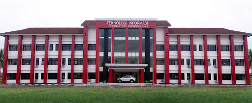
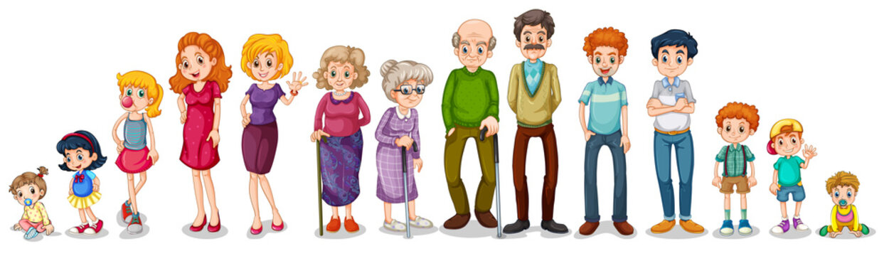
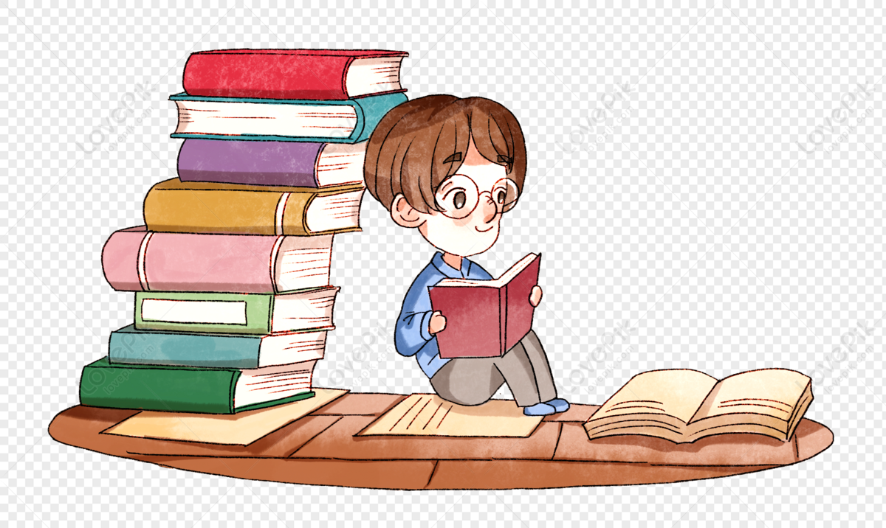
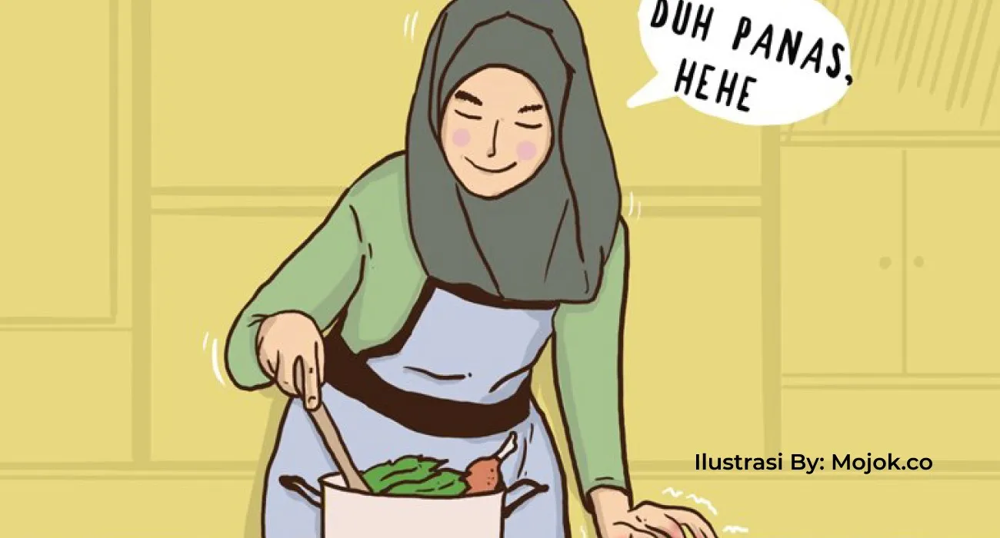

Tentang saya

Saya adalah seorang mahasiswa Politeknik Negeri Jember Jurusan Teknologi Informasi Program Studi Teknik Informatika. Saat ini saya menempuh semester lima.
Saya mempunyai semangat kerja yang tinggi, memiliki ketertarikan tinggi di bidang teknologi dan informasi serta memiliki kemampuan untuk berkomunikasi yang baik didalam tim.
Terdapat empat program studi yang ada di jurusan tenologi informasi yaitu Manajemen Informatika, Teknik Informatika, Teknik Komputer dan Bisnis Digital yang saat ini baru saja berdiri.
Berbagai pengalaman yang saya dapatkan selama menjadi mahasiswa it yang notabene saya berasal dari jurusan mipa sewaktu di SMA. Tak menyurutkan hati saya untuk terus belajar dan belajar agar saya bisa mencapai tujuan dan cita cita sebagai Software Quality Assurances. Meski hanya seorang QA, saya juga harus bisa mempelajari bahasa pemrograman yang telah diajarkan di kampus.
Keluarga

Aku tinggal bersama keluarga kecilku. Keluarga ini terdiri dari empat anggota, yaitu ayahku, ibuku, kakak laki-lakiku, dan tentu saja aku sebagai yang paling bungsu di keluargaku.
Ibuku seorang wanita paruh baya, dia sekarang berusia sekitar 48 tahu. Namanya Ibu Khomariyah. Dia memiliki wajah yang rupawan dan ramput lurus hitam panjang. Matanya sama seperti kebanyakan wanita Asia, hitam. Dia agak sedikit gemuk karena jarang berolahraga ditengah kegiatannya sebagai ibu rumah tangga yang sibuk. Meski begitu, dia dapat mengatur agar pakaian yang dikenakannya tetap terlihat menarik.
Ayahku bernama Bapak Jono, dia berusia sekitar 51 tahun. Meskipun dia tak lagi muda tapi rambutnya masih terlihat bagus berwarna hitam dengan sedikit uban. Matanya hitam seperti kebanyakan orang Asia, terutama orang Indonesia. Dia cukup tinggi jika dibandingkan dengan anggota keluarga lainnya, sekitar 168cm. Dia bekerja di pabrik kayu setempat sebagai manager. Dia begitu bekerja keras untuk keluarganya. Terkadang dia juga yang membuat makanan ketika ibu tak ada di rumah.
Aku sangat suka masakannya, terutama nasi gorengnya, rasanya seperti nasi goreng paling sedap yang pernah aku rasakan.
Kemudian anggota keluarga selanjutnya adalah kakakku, dia bernama Rino. Sekarang usianya 23 tahun. Seperti orang tuaku, kakakku juga memiliki warna mata hitam dan juga rambut hitam lurus. Dia lebih tinggi dibandingkan aku, dia setinggi ayahku. Dia cukup pintar, rajin, dan orang yang suka membantu. Sekarang dia melanjutkan sekolahnya untuk mempelajari bahasa Inggris dan berharap suatu saat bisa jadi guru yang baik.
Semua anggota keluargaku, terkecuali aku, dapat berbicara bahasa Jawa dan Sunda dengan begitu lancer. Kami pernah tinggal di Bandung, tepatnya di Leuwiliang selama 6 tahun.
Sayangnya, kami harus pindah ke Surabaya untuk beberapa alasan tertentu. Jadi, jika mereka sedang berbicara bahasa Sunda aku sama sekali tidak tahu apa yang sedang mereka bicarakan. Sekarang kami menjalani hidup di kotaku tercinta Surabaya.
Hobi
Hobi merupakan kegiatan yang menyenangkan di mana seseorang memiliki minat dan antusiasme dalam menjalankannya. Ketika menjalani hobi, seringkali waktu tak terasa begitu cepat berlalu karena kegiatan yang dilakukan tersebut terasa sangat menyenangkan.
Membaca

Buku adalah jendela ilmu begitu sebuah kalimat bijak mengatakannya. Selain itu membaca menjadi perintah pertama dari Allah SWT melalui Rasulullah Nabi Muhammad SAW kepada umatnya.
Artinya, membaca adalah hal yang sangat penting bagi kehidupan karena akan membuat kita jadi belajar dan mengerti banyak hal.
Berikut daftar buku yang sering saya baca :
Kategori buku-buku yang saya sukai :
Novel :
Novel menjadi salah satu jenis buku yang cukup familiar terutama bagi Anda yang gemar dengan cerita panjang
Cergam :
Jenis buku selanjutnya adalah cergam (cerita bergambar). Definisi cergam adalah suatu bentuk seni yang menggunakan gambar-gambar tidak bergerak yang disusun sedemikian rupa sehingga membentuk jalinan cerita.
Komik :
Komik adalah cerita bergambar. Selain dari buku, komik atau cerita bergambar juga dapat ditemui di surat kabar dan majalah-majalah.
Ensiklopedi :
Jenis buku ensiklopedia adalah buku yang menghimpun keterangan atau uraian tentang berbagai hal dalam bidang seni dan ilmu pengetahuan, yang disusun secara abjad.
Menulis
Hobi yang menambah wawasan selain membaca adalah menulis. Mengapa? Karena saat menulis kamu pastinya membutuhkan referensi dari buku, jurnal, artikel dan sumber-sumber lainnya. Secara tidak langsung kegiatan tersebut juga akan menambah pengetahuan tentang hal-hal yang belum kamu ketahui sebelumnya.
Macam-macam tulisan :
Jurnal :
Jenis tulisan pertama adalah jurnal. Jurnal merupakan catatan tertulis harian berdasarkan suatu kejadian, pengalaman, dan pengamatan yang dialami penulis. Jurnal biasanya bersifat terbatas yang hanya ditujukan untuk koleksi pribadi.
Fiksi :
Jenis tulisan fiksi mungkin paling sering dikerjakan ketika duduk di bangku sekolah. Fiksi atau karangan biasanya ditulis dengan tema tertentu, dalam bentuk prosa atau berupa analisa, spekulasi, atau informasi yang bersifat tidak sebenarnya.
Fabel :
Fabel adalah jenis tulisan yang mengandung cerita hewan yang berperilaku dan berbicara seperti orang. Fabel juga bisa dikelompokkan ke dalam dongeng anak-anak. Misalnya, dongeng Si Kancil Mencuri Timun, Si Kancil dan Buaya, Timun Emas, dan banyak lainnya.
Deskripsi :
Jenis tulisan deskripsi dapat berupa tulisan fiksi dan non-fiksi. Isi ceritanya tidak terbatas tema. Deskripsi fiksi menceritakan tentang orang-orang atau peristiwa yang tidak nyata, dalam artian hanya berupa imajinasi dari seorang penulis.
Memasak

Segelintir orang berpendapat bahwa memasak adalah kegiatan yang sangat merepotkan, karena menghabiskan waktu dan tenaga. Namun, bagi kalian yang mempunyai hobi ini, justru akan memperoleh banyak manfaat.
Manfaat memasak :
hidup makin bahagia :
Jika rajin membuat masakan tanpa ada unsur paksaan dan didasari atas kerelaan hati, hidup akan terasa lebih nikmat serta bahagia. Setiap melakukan kegiatan ini, pasti akan muncul pengalaman berharga
Meningkatkan daya kreativitas :
Saat memasak, kalian selalu mendapat tuntutan untuk menghasilkan masakan dengan cita rasa yang enak dan lezat. Hal itu akan memunculkan kreasi-kreasi baru dalam mencampur bumbu masakan, teknik pengolahan, memilih bahan, dan lainnya.
Menyehatkan jiwa dan mental :
Banyak ahli yang menegaskan bahwa kualitas kesehatan jiwa dan mental itu sering dipengaruhi oleh kreativitas. Makin rajin dan berani seseorang melakukan kreativitas, makin sehat pula jiwa dan mentalnya.
Meningkatkan rasa percaya diri :
Unsur utama dari hobi memasak itu ada dua. Pertama adalah kegiatan atau aktivitas saat kalian membuat masakan dan menikmati hasilnya. Ketika berhasil menciptakan masakan yang rasanya enak dan lezat, ini merupakan suatu hadiah tidak ternilai harganya.